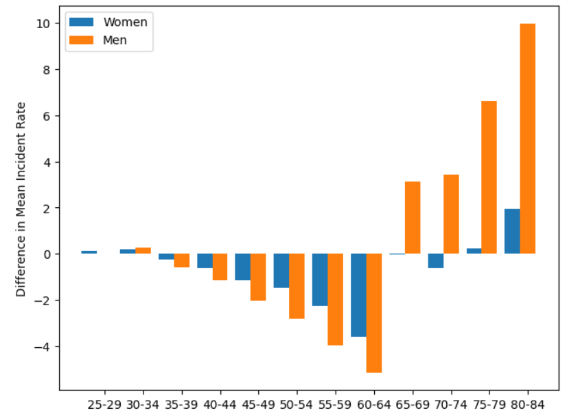
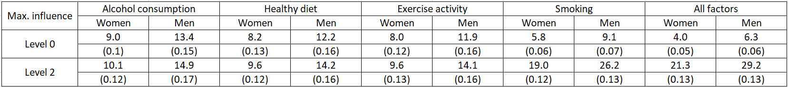
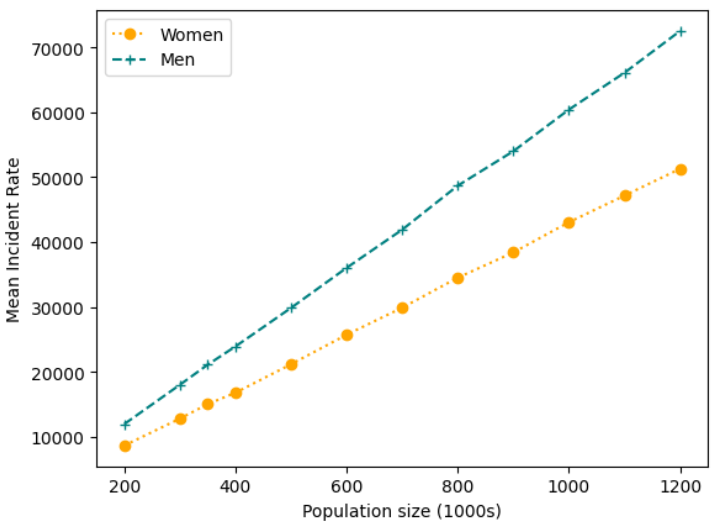

Conducting a reproducibility analysis of a computational model can be a useful exercise. From a purely technical standpoint it offers a chance to explore some cutting-edge methods and learn how they work. In the interest of open science, it can also give some insight into what can go right and wrong with reproducibility. Both such outcomes were motivation for this particular blog post: a reproducibility analysis of agent-based simulation in healthcare [1]. Read on to see my findings.
Check out the original article here!
Time to read: 9 minutes
WHAT IS AGENT-BASED MODELLING?
Agent-based modelling (ABM), or agent-based simulation, is a computational method used in complex systems modelling. More specifically, it is a modelling approach used to capture emergent behaviour [2,3], allowing for unexpected changes within a system to be accounted for. This makes ABM effective when modelling systems with some degree of social interaction [3] and is thus a popular method in the field of social science. Emergent behaviour is captured through the explicit modelling of individual, possibly heterogeneous agents, which can learn, interact and make decisions at each discrete time step. This focus on individual behaviour makes ABM a bottom-up approach to complex systems modelling [2].
ABM agents may differ to other computational models in that they are autonomous, interactive and malleable [3]. They possess autonomy in that they have their own individual characteristics and decide their own behaviour based upon them, though not with complete independence from other agents. Some interaction may occur between agents that is capable of shaping their behaviour; that is, they are malleable. Modelling individuals can unfortunately lead to high computational expense for some agent-based models [4], particularly for large populations of agents. Nonetheless, ABM remains a popular and flexible choice in complex systems modelling.
THE MODEL
Archbold et al. were interested in how cardiovascular disease (CVD) risk factors spread through social networks and the impact that it can have on CVD incidence within the population [1]. They utilised an ABM to examine this and to trial areas for potential intervention. Four risk factors were identified, namely diet, inactivity, smoking and alcohol intake. For full model details, please refer to their paper, but I will briefly introduce their work in this section.
In general, agents were generated to represent a city similar in size to Coventry, England, though the model is scalable up to a city as large as Birmingham, England. Agents were randomly assigned age (minimum of 18 years), sex, socioeconomic status, risk factor level attributes and a threshold for behavioural change and social networks were formed via four relationships: marriage, household, friendship and workplace. Risk factor levels took the value 0, 1 or 2 according to criteria summarised in the table below. Then, for each risk factor at each level, an influence strength value between 0 and 1 was determined for each relationship. The baseline scenarios assumed no workplace influence to exist (i.e. a value of 0). Non-zero workplace influences were only introduced for the intervention scenarios, to represent the potential for workplace policy tackling diet and inactivity.
At each discrete time step in the model, total influence for each agent was summed up and compared to their individual threshold for change. If the threshold was exceeded, then the agent was moved to the respective risk factor level. Otherwise, it remained at the same level. Then, a risk of developing CVD was determined using a simplified version of an existing algorithm. Simulations were run for a total of 10 time steps, each time step representing a year, and 100 unseeded repeats were performed.
The model was implemented in Python and all original source code can be accessed here under a GPL-3.0 license. The GitHub repository contains two folders with data to inform the model for workplaces of mean size 4 and 21. There are also four .py files with the code required to run the simulations. I generally found the code to be self-explanatory and readily usable. To create the model’s social network the package networkx was used; documentation can be found here [5].
Key results in the paper were identified to be table 3 (baseline results), figure 1 (model calibration), table 5 (sensitivity analysis), figure 2 (model scalability) and table 6 (intervention results). The next section documents my attempts to reproduce each.
RESULTS
BASELINE: TABLE 3
The results from baseline testing from the original paper are given below.
I attempted to reproduce these results, though due to the large computational demand from the model, only 10 simulation repeats were performed. Matching values were therefore not expected. Looking at the values I obtained, some consistency has been achieved. There does appear to be a slight shift to higher CVD rates across the board, but it is unclear whether this is due to randomness.
CALIBRATION: FIGURE 1
Calibration of the model was tested by comparing rates obtained by Hippisley et al. [6] to the model rates. The original resulting plot is shown below. I have chosen to omit table 4 as the results are captured in the figure itself.
As before, my results are the output of only 10 simulation repeats and so may differ from the original. Nonetheless, clear consistency has been achieved. We see a similar pattern between the graphs, albeit higher differences for the older age groups. 
SENSITIVITY: TABLE 5
Sensitivity analysis was performed to see the effect of maximising influence from risk factors at levels 0 and 2. The results from the paper are summarised in the table below.
In the interest of computational time, I did not conduct any simulation repeats, so my results will be subject to randomness. The values I obtained do in general fall within the right bandwidth, evidencing some reproducibility. Rates obtained when maximising the influence for alcohol consumption do seem slightly high however.
SCALABILITY: FIGURE 2
Archbold et al. tested the scalability of their model for populations outside of 350K. Their plot, shown below, identified a linear relationship between population size and mean CVD incident rate.
Running the model was computationally expensive, particularly for large population sizes, and so once again I did not repeat simulations. Hence, my reproduced plot below does not achieve a perfect straight line, but the general trend is consistent. Reproducibility has been successful here.

INTERVENTION: TABLE 6
The impact of exerting workplace influence for diet, inactivity and both risk factors was trialed in the paper for a range of adoption rates (i.e. the proportion of workplaces involved in the intervention). The resulting table is shown below.
Again, no simulation repeats were performed for this table. Values were therefore not expected to match. This has possibly resulted in an unclear assessment of reproducibility, as some values are fairly out and the general conclusions from the data have not been captured. I have still achieved lower rates for 100% adoption with both risk factors, as seen in the paper, but across the board there are some inconsistencies.
DISCUSSION
This article documents my attempts to reproduce the work of Archbold et al [1]. The paper was a particularly good example of agent-based modelling in healthcare and evident care was taken to ensure others could learn from their work. It was my general finding that their work was indeed reproducible, or at least would have been with sufficient simulation repeats.
WHAT MADE THE WORK REPRODUCIBLE?
The provision of code under a GPL-3.0 licence itself was a good first step. This meant that I had access to their code and was free to use it. Without this, reproducibility would have fallen at the first hurdle. The programming language was also a positive; Python is free and open source software, which is always desirable where reproducible research is concerned. Following on from this, the code supplied actually ran without modification and was clearly organised, both within the repository and within the files themselves. Informative comments, self-explanatory variable, class and function names and the inclusion of a README file ensured quick and thorough comprehension. Aside from the code, the paper also clearly documented steps taken. It was easy to understand the purpose of the paper and what the results showed.
My reproducibility analysis therefore stressed the importance of the following to me:
Model code should be provided (e.g. on GitHub) with a licence and a README file;
Free and open source software ought to be used;
Code should run without modification required;
Separate files should be used to keep code organised and files concise;
Informative naming in code is particularly helpful.
WHAT CHALLENGES DID I FACE?
The biggest issue was the computational demand of the model. In order to fully assess reproducibility, I would have needed to run 100 simulation repeats for each scenario, but this would have taken a great deal of time. There was therefore a fair degree of randomness in my results which made it difficult to compare to the original set. It would have been useful if one seeded simulation was specified in the author’s GitHub repository as an example, so that code could be checked in a reasonable amount of time and without the need for running lots of simulation repeats.
Another challenge I faced was with simulation of the intervention scenario. Whilst the conditions were well-explained in the paper, code to implement it was not provided and it was not straightforward how to do this with the existing code. I spent time modifying their code in order to run the intervention simulations. This was not too difficult, but code to run the intervention scenario would have saved time and given me more confidence in my results.
Finally, whilst this is more of a comment than a challenge, it would have been good practice if python packages were explicitly stated. I created a virtual environment with packages dated around the same time as paper publication and this was fine to run the code, but knowing the exact package versions would have been helpful.
In summary, I recommend the following additional steps for computational reproducibility:
For computationally expensive models, provide output of a single seeded simulation for quick checking;
Attach code for all simulation scenarios;
Explicitly state package versions used.
FINAL REMARKS
I would firstly like to commend the authors of the paper for a strong piece of research and for what I found to be largely reproducible. I would also like to state that the intention of this article is not to criticise their work, but merely provide some insight into the current state of computational reproducibility. Lastly, I wish to state that these are my own findings and that others may reach different conclusions. A more rigorous reproducibility analysis should incorporate several individual attempts from different researchers.
As a final note, all code used in this article has been uploaded to GitHub here. Be sure to check it out and I of course welcome any feedback you may have. Email me on tbs204@exeter.ac.uk to get in touch or do reach out on LinkedIn.
REFERENCES
- Archbold J, Clohessy S, Herath D, Griffiths N, Oyebode O. An agent-based model of the spread of behavioural risk-factors for cardiovascular disease in city-scale populations. PLOS ONE. 2024;19(5):e0303051.
- Eldabi T, editor Systemic Characteristics to Support Hybrid Simulation Modeling. 2021 Winter Simulation Conference (WSC); 2021 12-15 Dec. 2021.
- Secchi D. How do I develop an agent-based model? Northampton, Massachusetts: Edward Elgar Publishing; 2022.
- Chimeh MK, Richmond P. Simulating heterogeneous behaviours in complex systems on GPUs. Simulation Modelling Practice and Theory. 2018;83:3-17.
- NetworkX. 2024. [Available from: https://networkx.org/documentation/stable/reference/index.html.]
- Hippisley-Cox J, Coupland C, Brindle P. Development and validation of QRISK3 risk prediction algorithms to estimate future risk of cardiovascular disease: prospective cohort study. BMJ. 2017;357:j2099.